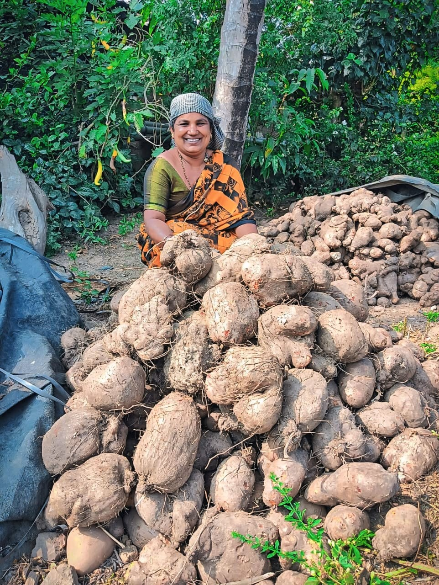
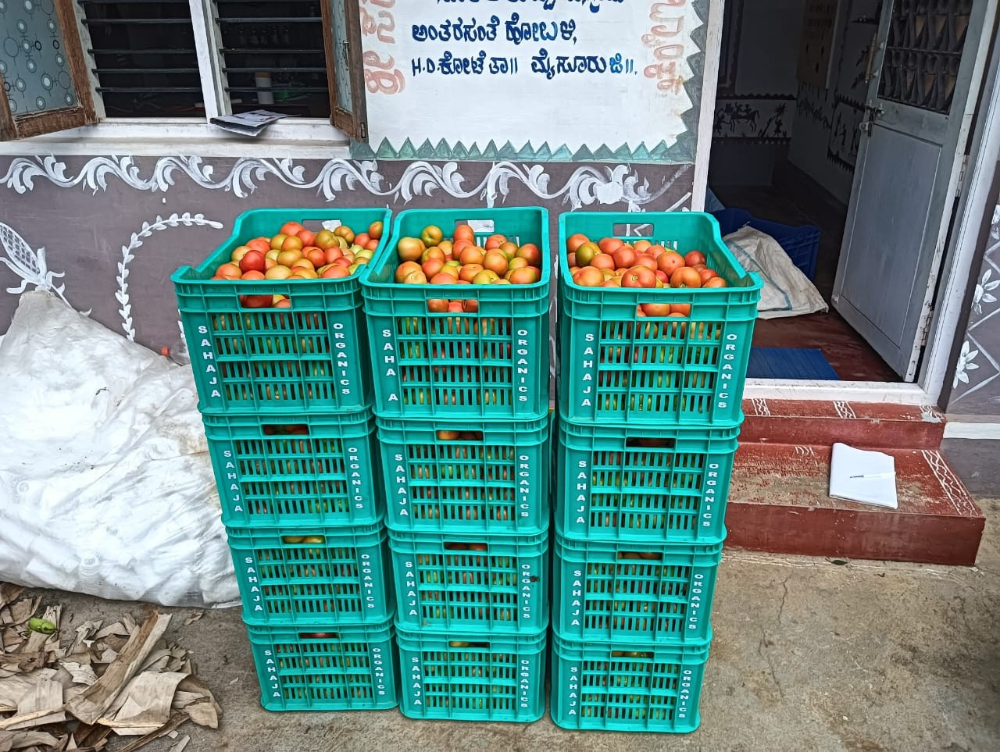
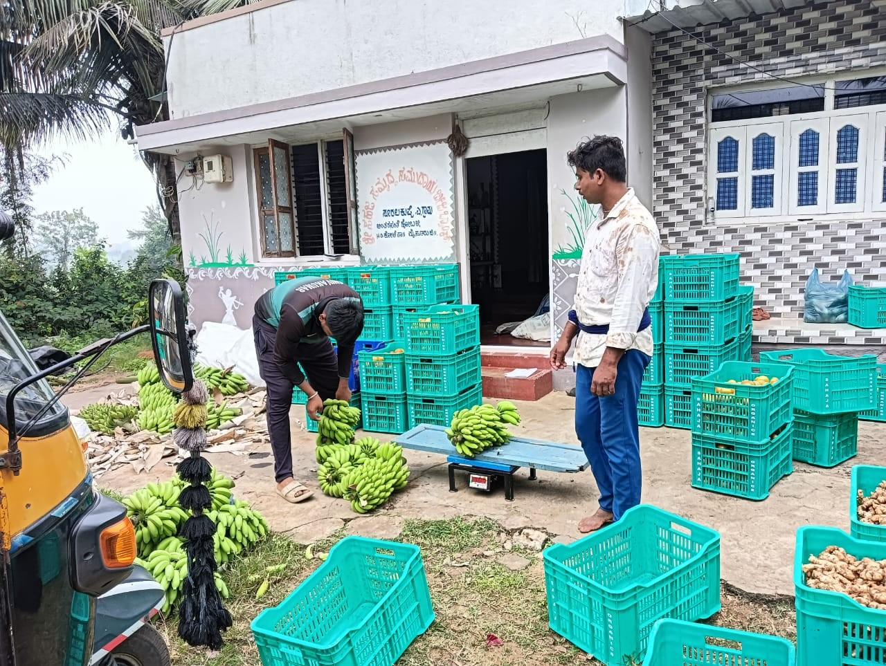
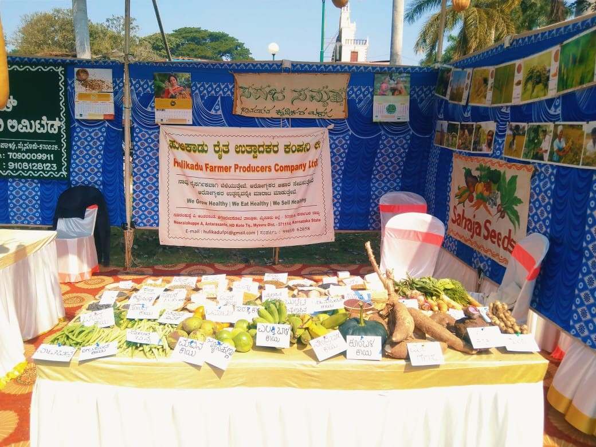
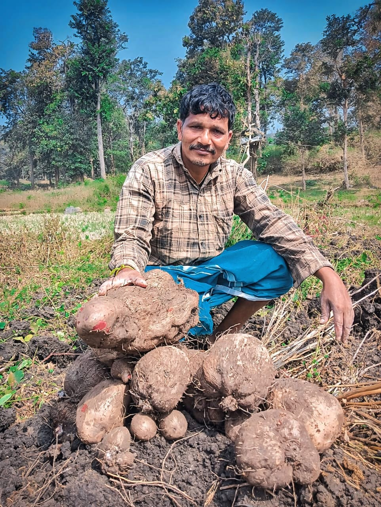
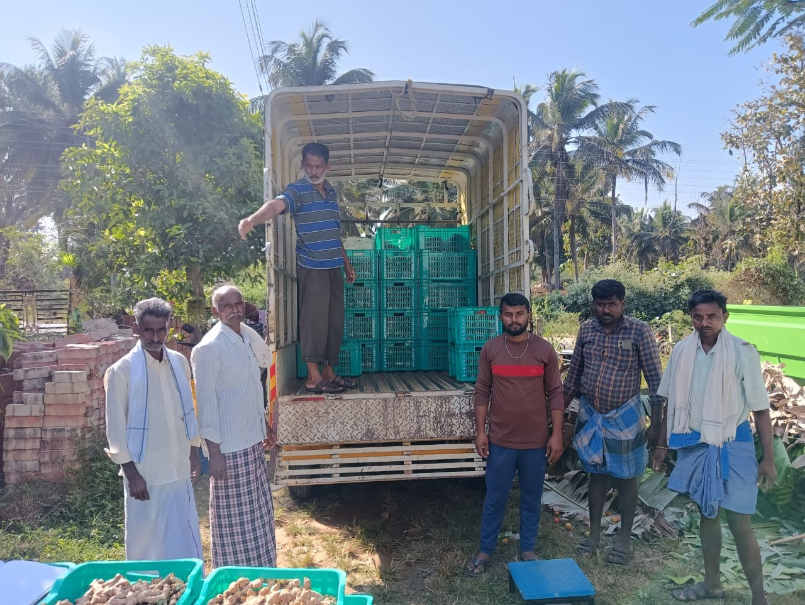
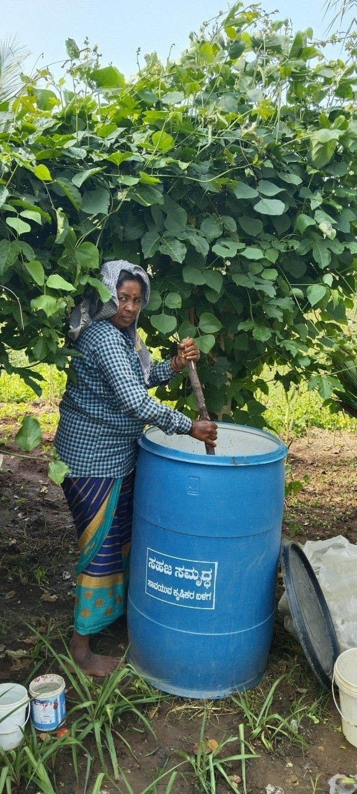
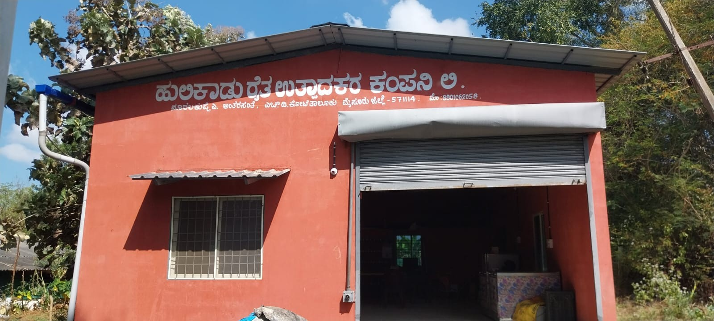
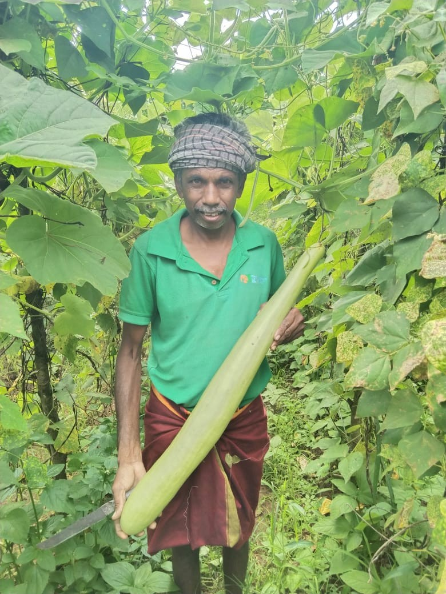
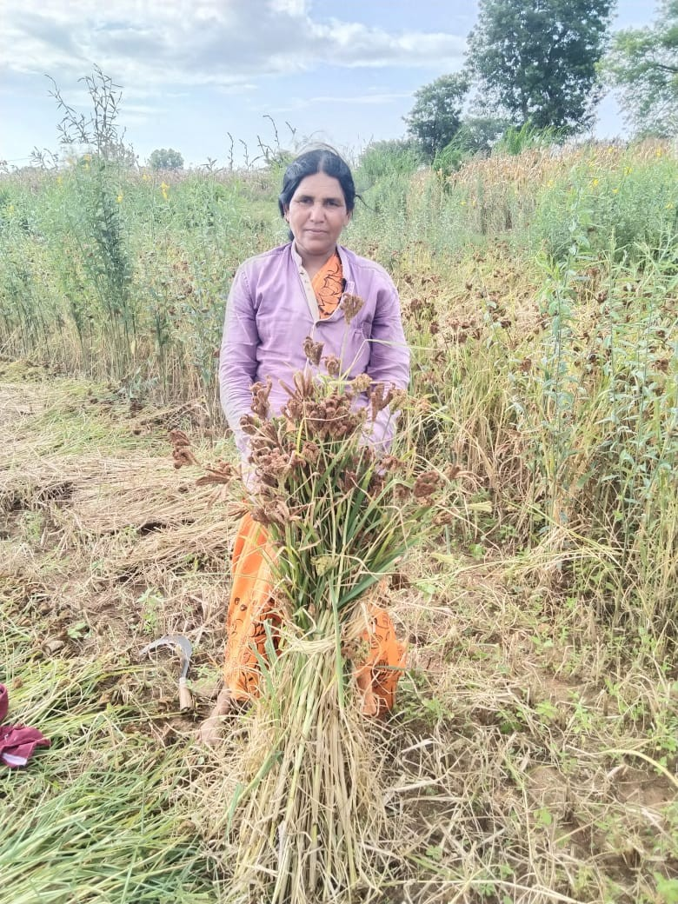

Organic Vegetable Production
We focus on organic vegetable production with trusted local farmers, planned month by month for year-round supply.
Nuralakuppe A • H.D. Kote • Mysuru
Empowering Tribal Farmers Delivering Trusted Organic Produce.
About Us
Hulikadu Farmers Producer Company Ltd. is a farmer producer organization incorporated in August 2023, owned by 125 active shareholders with a share capital of Rs. 3,00,000.
We are located in Nuralakuppe A, H.D. Kote taluk, Mysuru district. The name “Hulikadu” honors the neighbouring Nagarahole Tiger Reserve — a landscape where our tribal and small farmers grow food in harmony with nature.
We own a 1000 sq.ft FPC godown for aggregation and grading, and have successfully carried out business worth Rs. 10,00,000 to date.
Incorporated August 2023
125 active farmer shareholders
Nuralakuppe A, H.D. Kote, Mysuru
Own 1000 sq.ft FPC godown
What We Do
We connect trusted local farmers with reliable organic markets — handling training, grading and supply.
We focus on organic vegetable production with trusted local farmers, planned month by month for year-round supply.
We train farmers on organic farming practices and on-farm grading, and supply bio-inputs such as Fish amino acid.
Produce is aggregated and graded at our godown, then supplied to major partners like Sahaja Organics, Bangalore.
We take part in fairs such as the Roots and Tubers Mela, Soppu Mela and Banana Mela to promote our farmers' produce.
Our Products
Seasonal availability may vary. Message us on WhatsApp for current stock and rates.
Gallery
Moments from our fields, godown, fairs and farm-to-plate meals. Tap a photo to enlarge.












Contact Us
Looking to buy organic produce, partner with us, or visit the godown? Reach out — we'd love to hear from you.
Chat with us on WhatsApp!Hulikadu Farmers Producer Company Ltd.
Nuralakuppe A Hobli, H.D. Kote,
Mysuru, Karnataka - 571114